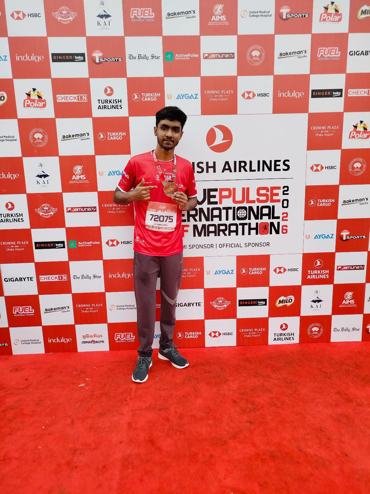
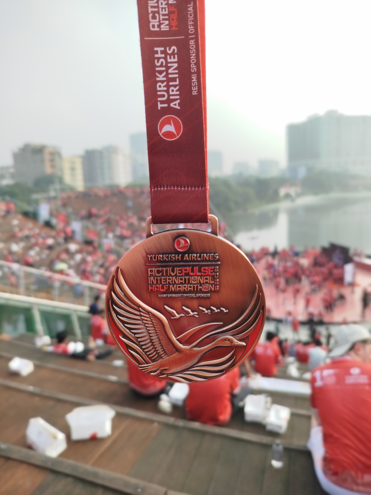
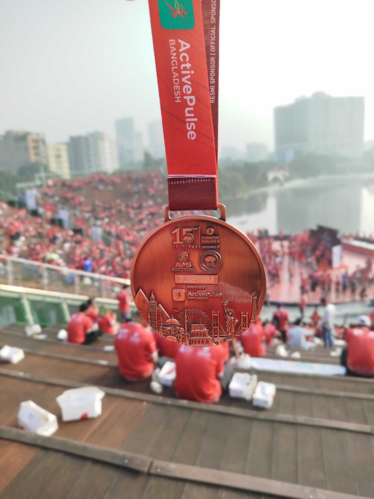
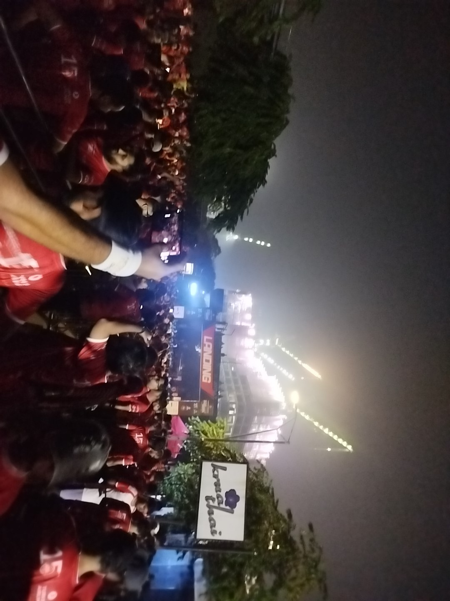

My First Running Event
A sea of red running together.
Getting There
I woke up at 3:00 AM and left home at around 3:45 AM, taking an Uber to Hatirjheel. I arrived there around 4:00–4:10 AM, ready for my first-ever running event. At first, waking up so early felt like a big effort, but as I looked around and felt the atmosphere of the event, I realized that coming here this morning was one of the best decisions I had ever made. The excitement, the energy, and the feeling of being part of something special made every bit of the early morning journey worthwhile.
What I Saw
One of the best parts of the event was getting to meet some professional runners, pacers, and podium finishers in person for the first time. It was inspiring to see so many passionate runners gathered in one place. I also met Rafsan the ChotoBhai for the first time and got the opportunity to take a selfie with him. These little moments made my first running event even more memorable and gave me some amazing memories to look back on.
Photo Gallery




My Experience
A morning I'll never forget. 🏃♂️ My first-ever running event was more than just a race; it was an experience filled with excitement, new faces, and unforgettable memories. Waking up at 3 AM and heading to Hatirjheel Amphitheatre felt worth it the moment I experienced the atmosphere. From seeing professional runners, pacers, and podium finishers to meeting Rafsan the ChotoBhai and taking a selfie with him, every moment made the day special. Crossing into this new experience gave me a sense of achievement and inspired me to explore more challenges in life. I may have started as a beginner, but this event gave me a beautiful memory and a new reason to keep moving forward. This is just the beginning of my journey. One run, one experience, and one memory at a time. ❤️
My tip for first-timers: Don't overthink it. Wake up, show up, enjoy the atmosphere, and make memories. Sometimes, the best experiences begin before sunrise.
← Back to all trips